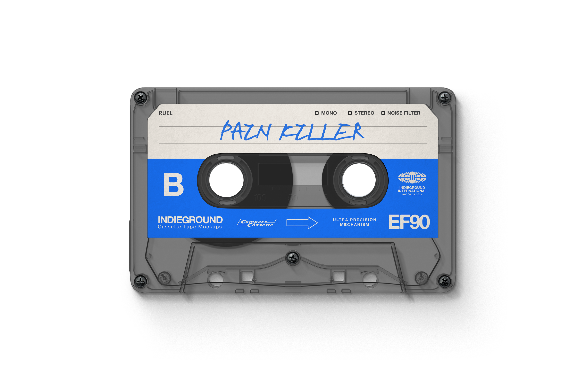
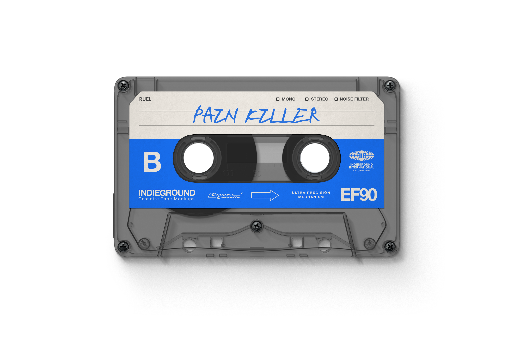

Painkiller
Ruel
Released May 1, 2019,
as the lead single from his EP *Free Time*.
Written by Ruel, Sarah Aarons, and Hiren Mor,
produced by M-Phazes.
A remix featuring Denzel Curry followed in 2020,
and the song placed 3rd at the 2020 Vanda & Young
Global Songwriting Competition.
The track is pop / R&B in style,
and the official video was published on May 1, 2019.
Released under RCA / Sony Australia.
The version in this website is a
Mr. Carmack Remix version